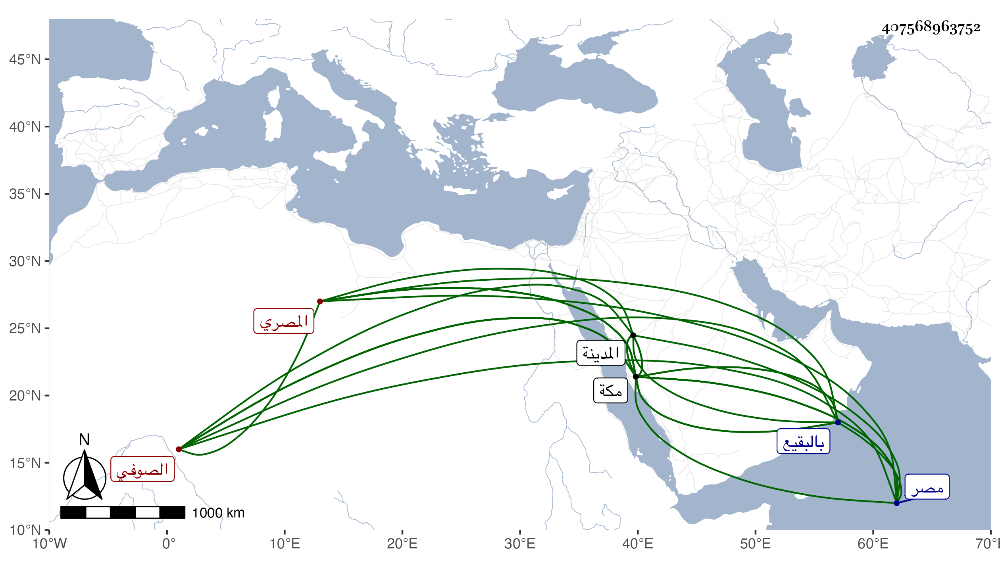

0902Sakhawi.DawLamic.ITO20230111-ara1.EIS1600.407568963752
Biography ID: 407568963752
153
محمد بن أحمد بن محمد بن علي بن سليمان الشمس المصري الصوفي نزيل مكة ويعرف بابن النجم . سمع بمصر فيما أحسب من قاضيها أبي البقاء السبكي وصحب يوسف العجمي وصار من مريديه ونظر في كتب الصوفية وغيرها من كتب العلم ومال فيما بلغني لابن عربي وكتب بخطه كتبا وفوائد منها على ما ذكر لحفظ النفس والمال : الله حفيظ قديم أزلي حي قيوم لا ينام ، وذكر أن من قال ذلك إلى جهة مال له غائب حفظ ، وجاور بمكة نحو ثمانية عشر عاما وتأهل بها وولد له وسمع الحديث بها من بعض شيوخنا بالسماع والإجازة وتعبد كثيرا واشتهر ، ثم انتقل إلى المدينة فسكنها عامين وأشهرا ثم توفي بها في شهر ربيع الأول سنة إحدى ودفن بالبقيع . ذكره الفاسي بمكة وقال هكذا أملي على نسبه ولده محمد سبط يوسف بن علي القروي . وقال ابن حجي أنه جاز الستين وكان على طريقة ابن عربي وغيره مع كثرة العبادة ، وهو في الأنباء باختصار . وقال المقريزي في عقوده : كان كثير العبادة ترتاح النفس عند رؤيته ، لقيته بمكة في سنة ثلاث وثمانين ثم في سنة سبع وثمانين رحمه الله .
